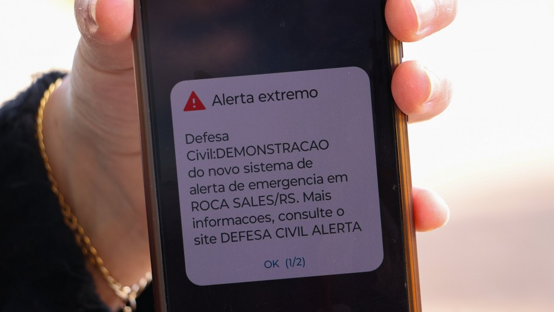

Avisos e Alertas: Como se Proteger
Compreender a diferença entre os comunicados meteorológicos e saber interpretar os níveis de alerta da Defesa Civil é o primeiro passo para garantir a segurança da sua família e da sua comunidade diante de eventos climáticos extremos.
Diferença entre Alerta e Aviso
- Aviso: Emitido para chuvas fortes e tempestades que podem ocorrer em uma janela de 24 a 72 horas. Serve para antecipar a preparação.
- Alerta: Indica risco iminente com necessidade de atenção imediata e ação rápida. É enviado quando o fenômeno está prestes a ocorrer.
Níveis de Alerta
- Alerta Amarelo (Risco Moderado): Há possibilidade de perigo, como tempestades começando a se formar.
- Alerta Laranja (Risco Alto): Situação de perigo. Já existe risco direto para a segurança e para os bens (geralmente válido por até 3 horas).
- Alerta Vermelho (Situação de Emergência): Tempestade severa ou desastre está acontecendo ou muito próximo. Ação urgente necessária.
Como Receber os Alertas Oficiais
Você pode se cadastrar para receber avisos e alertas oficiais diretamente no seu celular:
- Por SMS: Envie o seu CEP para o número 40199.
- Pelo WhatsApp: Mande mensagem para o contato oficial da Defesa Civil: (61) 2034-4611.
- Cell Broadcast (Alerta Automático no Celular): Desde os últimos anos, a Defesa Civil e as operadoras de telefonia utilizam o sistema de transmissão por torres locais. Isso significa que, em caso de risco iminente, as mensagens aparecem diretamente na tela do seu smartphone com um sinal sonoro de alerta, sem necessidade de nenhum cadastro prévio.

Como Agir Durante Temporais Severos
Diretrizes essenciais recomendadas pela Defesa Civil para momentos de tempestades fortes:
- Procure um abrigo com cobertura resistente e evite ficar perto de árvores e placas.
- Mantenha as janelas bem fechadas e fique longe delas.
- Evite permanecer embaixo de coberturas frágeis.
- Coloque documentos e objetos de valor em sacos plásticos bem fechados, em local protegido e de fácil acesso.
- Desligue a energia elétrica e feche os registros de água e gás.
- Auxilie crianças, idosos e pessoas com dificuldade de locomoção próximas a você.
- Proteja sua cabeça de objetos que possam cair ou se deslocar em função dos ventos fortes (utilize colchões se necessário).
Aprenda a se proteger em cada uma dessas situações:
Fontes e Referências
- Defesa Civil / RPC (Reportagem Especial): Orientações oficiais de monitoramento de risco e escalas de alerta.